In linux every file is associated with a special data structure known as Index Node or Inode.
Inodes contain all metadata about file such as file's permissions, owners, type, size etc.
Inodes actually store everything except file's contents and and file names. Each inode is uniquely identified by an integer known as inode number which can be viewed by ls -i command.
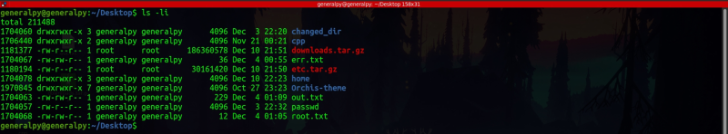
All contents shown by ls -l command are stored in inode.
Since file names are not stored in inodes, they are stored in directories. Directories are basically 2 column tables where first column contains file names and second column is inode number.
Directories are something like below output.
When file is accessed, the current directory is searched for file and its inode number is reffered and used further. File contents are stored somewhere else where inodes contain pointers to file contents.
The association between the file strucuture and file name is called hard link. The third column in output of ls -li is number of hardlinks to a file.
Stat also gives number of hard links.
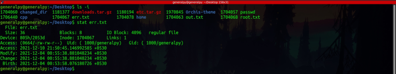
We can create new hardlink by ln command which stand for link. Simple syntax of ln is :
ln existing_name new_name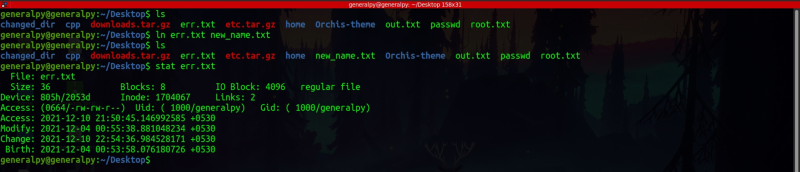
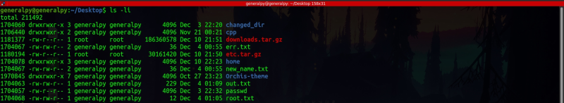
Here both err.txt and new_name.txt are same. If we change one second one will also change as inodes are same.
Hardlinks can also be created in different dirs.
If we remove a file using rm, only the specified hard link(file name) is deleted and hardlink count is decremented by 1. If inode hardlink count is 0 then only inode is freed for further use.
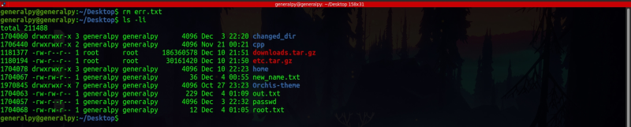
We removed err.txt but new_name.txt is still there with inode count of 1.
We can use find command to find all hardlinks using -inum flag and passing it inode number.
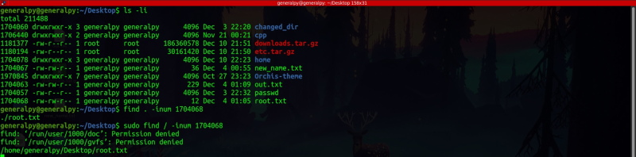
We cannot create hardliinks to directories or files in a different partition as hard links cannot cross partition boundaries.
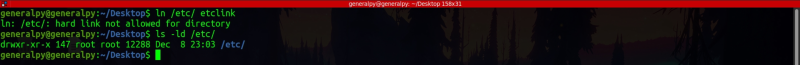
We can see that we cannot create hard links but there are 147 hard links already present. These are , . directory which is reference to the directory itself, and all of the subdirectories inside the directory which contain link to parent directory using .. .
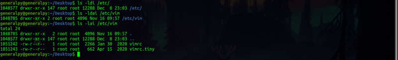
We can notice .. inside vim has same inode number as etc.
We can find files using number of links with find command with -links flag.
Below command finds all files with more than 2 links.
Hardlinks are links between file names and inode structures but softlinks are special files which point towards a file or directory.
If we delete a hardlink, remaining files point to same inode but if we delete file where symlink is poiniting to, the symlink becomes useless or broken.
To create a symlink we use ln command with -s flag.
ln -s existing_file symlink_name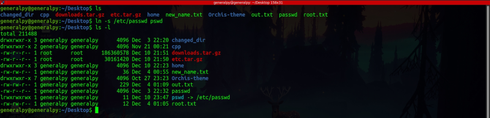
We can see pswd is colored differently and an arrow is created which is pointing to /etc/passwd.
We created a new file named new.txt and created a symlink and hardlink.
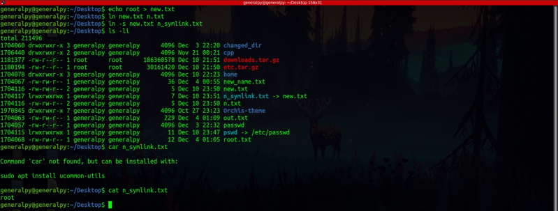
We moved our file to a different directory. Symlink is broken but hardlink is still there.
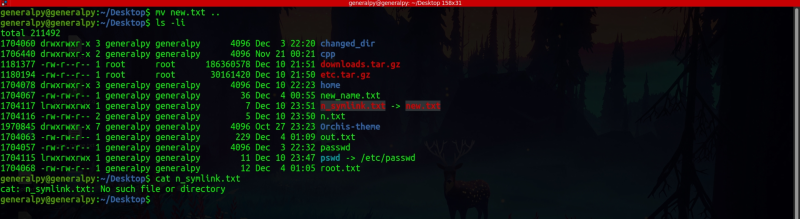
A symlink can also pass partitions.